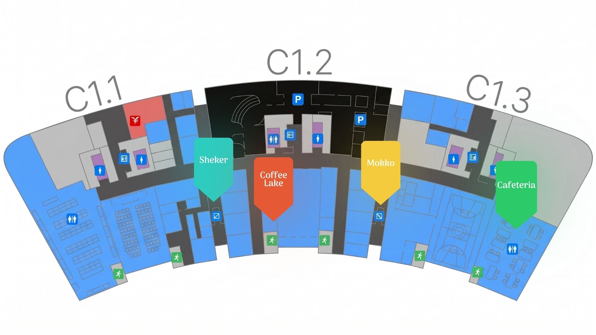

All spots, one page
Find Cafeteria, Coffee Lake, Sheker and Mokko, with their locations and opening hours.
Explore the spotsFour dining spots, their opening hours, and menus in one place so you don’t waste a break searching.
Find Cafeteria, Coffee Lake, Sheker and Mokko, with their locations and opening hours.
Explore the spotsCheck the opening days and hours before heading out between classes.
Check opening hoursSee the listed coffee prices and compare Americano and Latte prices per 100 ml.
Compare coffee pricesAll four spots are on the 1st floor of building C1. Pin colors match the dining spots above.
